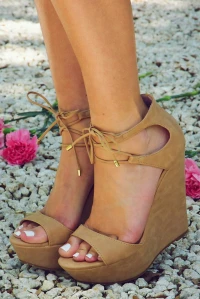
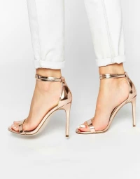

*****MAKEUP SHE SAID*****
An Indian Beauty Blog
8 Types of Footwear every girl must own!
"Give a Woman right shoes and she will conquer the world! –
Marilyn Monroe
In today’s time where women walks hand in hand with men, we are always on a run for something or the other.
Shoes definitely play a very important part. They need to be very comfortable yet stylish. Because no compromise
on style.. what say ladies?"
So, Here i have collated 8 types of footwear that every woman should own.
- Flat Sandals: A pair of flat sandals is a must have in your shoe collection. Whether it is just
another casual day of running around or a brunch with friends, flat sandals could be the most
comfortable
choice. And they also come in so many different styles. So choose what suits your style.

- Pumps: A pair of Black and a Nude pumps in your shoe rack and you are sorted for all those movie
and
dinner dates. They go really well with a formal

- Sneakers: Sneakers are a major trend these days. They can be paired with almost everything and
are
super comfortable and stylish.

- Ballet flats: Ballet flats are comfortable yet very chic. You can wear them from work to party.
Just
anywhere. They can be teamed up with denims, dresses, skirts, shorts. Play around with a variety of
colors
and textures.

- Wedged Heels: For all those short girls out there, wedged heels is a very smart choice. It makes
you
look tall without being uncomfortable like the spiked heels.

- Metallic sandals: A pair of metallic sandals is definitely a great pick. You don’t have to think
a
lot when pairing a gold or a silver metallic sandal as they go with almost every color outfit. For all
my
Indian friends, this is absolutely a must have. We all know what part gold and silver color play when it
comes to Indian ethnic clothes.

- Sports shoes: For all my fitness freak friends out there, i need not tell how important sports
shoes
are in our collection. They can also be styled for a casual look with your favourite denim and a basic
tee.

- Boots: And last but not the least, a pair of boots. It can be leather ones or suede, thigh high
or
ankle length, combat or with a little heel. They look effortlessly chic and stylish. Also, they keep you
warm during winters.